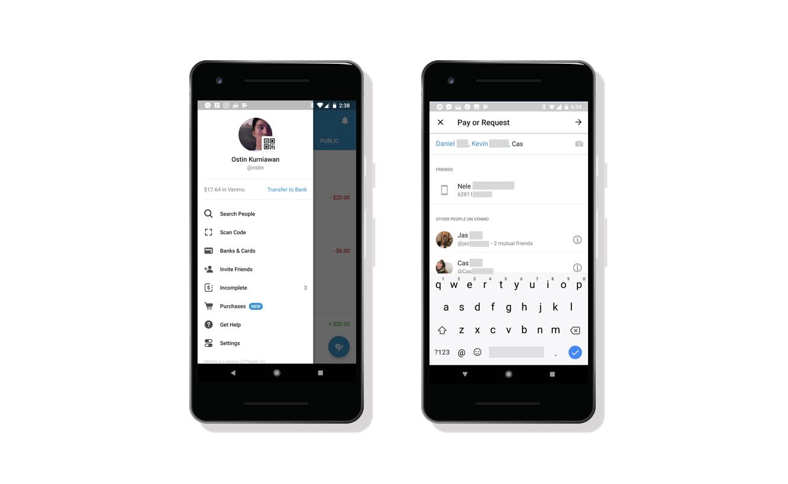
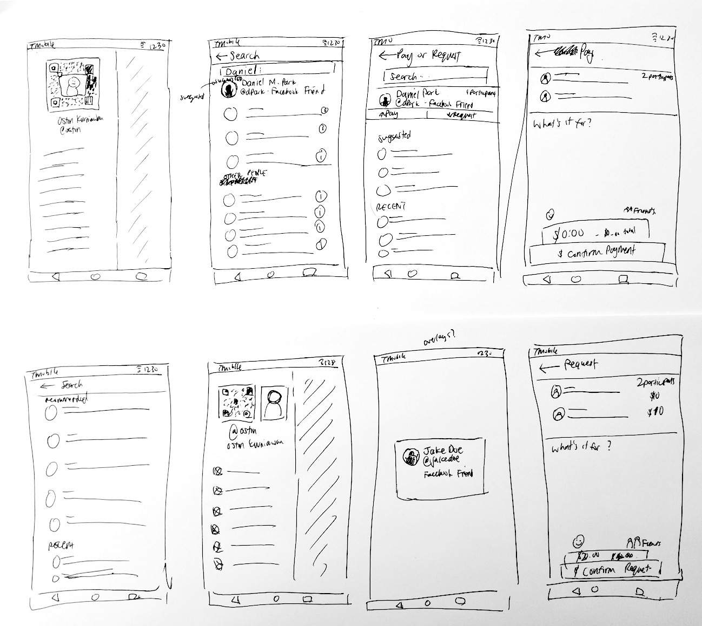
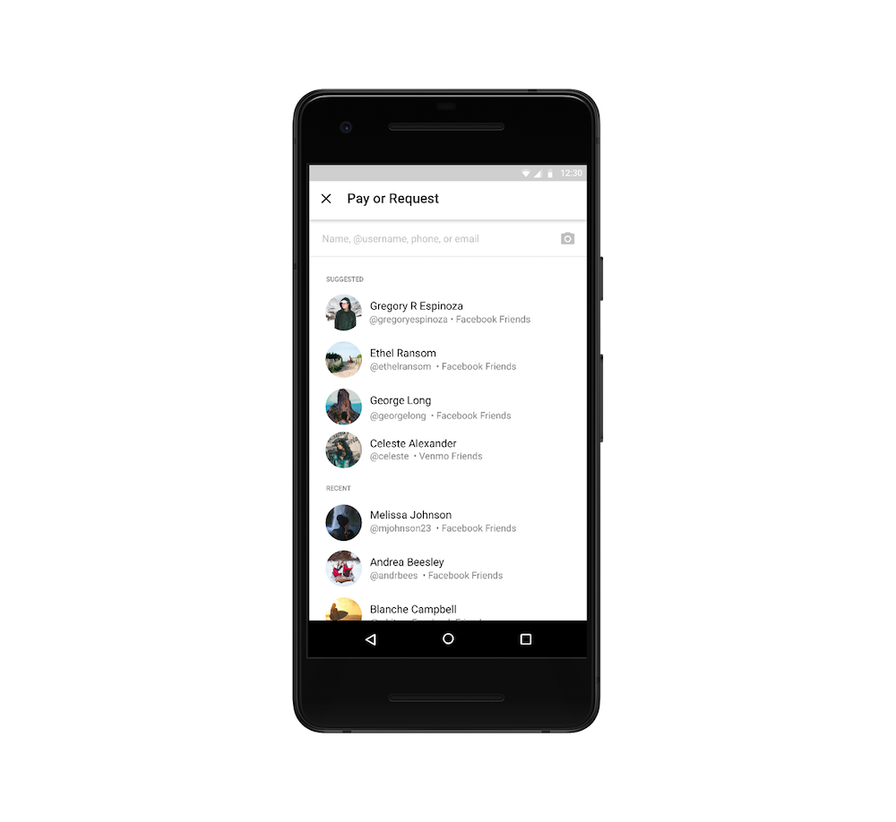
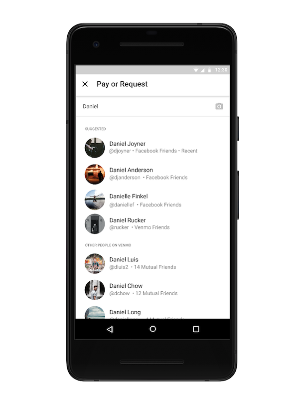
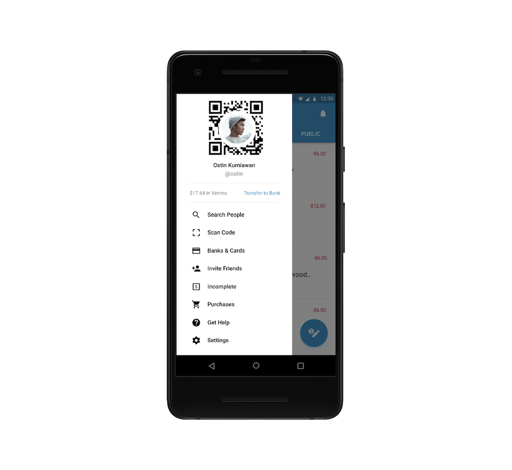
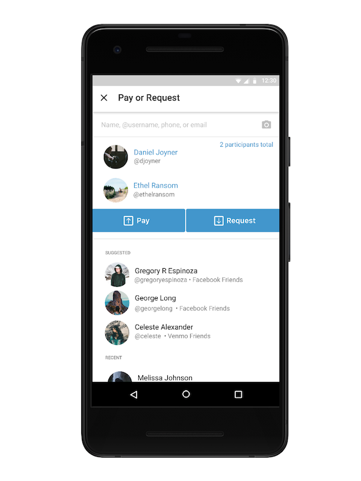
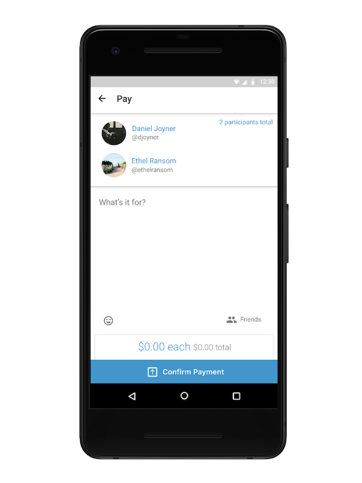
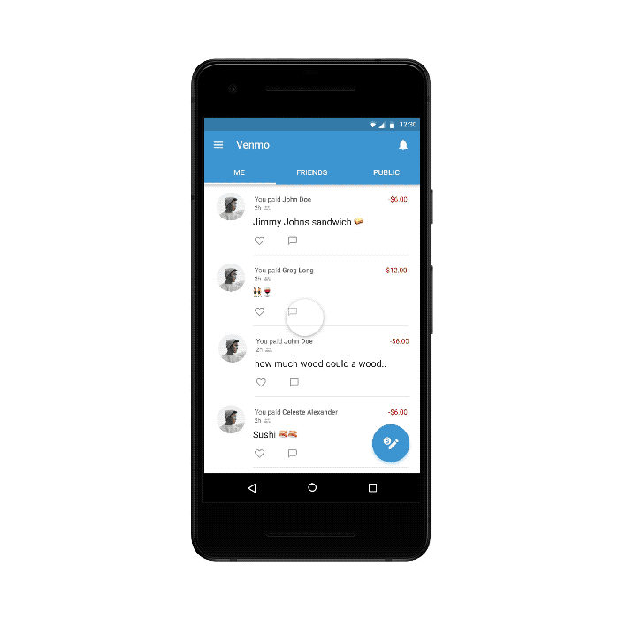
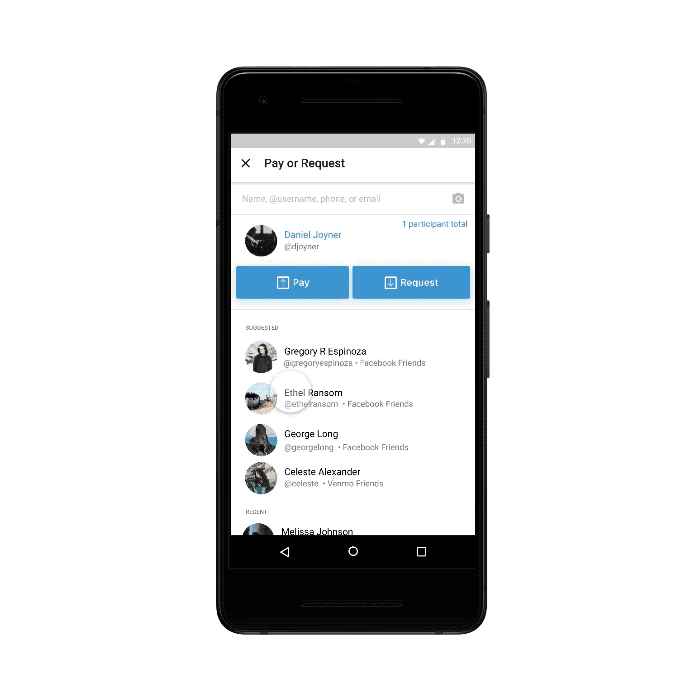
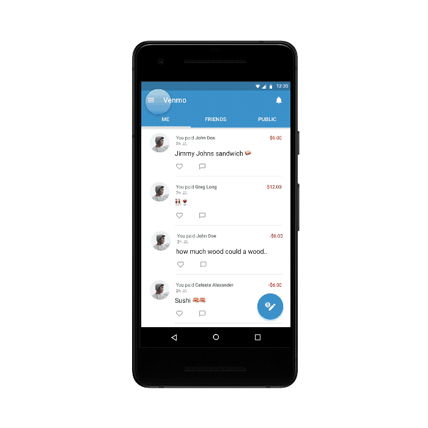

As a side project to put my HCDE theory and interaction design skills to the test, I challenged myself to do a (unsolicited) redesign for a feature of an app I used regularly in a single weekend. I chose Venmo since it has largely become an essential tool in the average college students’ arsenal of smartphone apps, seeing regular use for all sorts of financial transactions — from splitting rent to meals alike. The feature I saw the most potential for a redesign was the integrated Search and Pay function. There are a couple reasons as to why.

The Venmo app, as of January 2018. Note the small "QR" icon near the user image in the left screenshot, and the fact that my Facebook friend "Casey" does not show up immediately as a search result.
-
Facebook friends are not automatically added as Venmo Friends, even though the account is linked.
-
Facebook friends are not prioritised over other accounts that may match a Search query.
-
A common issue I hear from other users is that users have to unnecessarily search through the search results because their Facebook friends are not at the top.Users you have interacted with in the past are not prioritised either.
-
Finding a Venmo code requires the user to dive into many menus.
Here's an example of these issues in practice:
I researched other “peer payment” apps like Cash App (previously Square Cash), Messenger Pay, Apple Pay Cash, and Google Wallet. I studied their search functions, especially in relation to the process of group payments. I also studied the search functions of other social apps like Snapchat, Facebook, and Instagram to identify best practices in ensuring that what is searched for is most relevant to the user. In doing so, I came up with a number of key insights:
-
In Instagram and Snapchat, the service provides a number of ‘Suggested’ users to interact with, presumably based on most recently or most interacted with. It then breaks down search into ‘Recent’ or ‘Top’, which sort by immediate friends or people you’ve interacted with based on those criterion. People you have never interacted with are at the bottom of the list, and out of sight unless you specifically scroll down far enough.
-
Snapchat and Messenger provide one-click or one-swipe access to their respective visual user ‘Codes’ (Snapcodes and Messenger Codes), making it easy for users to share their codes without having to dig through a multiple layers of menus.
-
Snapchat provides quick access to users you’ve recently interacted with when sending Snaps, which makes sending people regular payments easy and visual, rather than scrolling through a list.
-
When requesting money from multiple people, Google Wallet presents the users you are requesting/paying money to in a list, which makes it easier to check whether you’ve charged the correct amount of people.
I conducted informal user observations to identify the pain points during this process. I asked four of my friends (three college students, one high schooler) to request a sample payment from a group of five of my other friends, while I watched them use the application. I asked them to think aloud, and especially voice any concerns when the application became confusing. In doing so, I found and/or confirmed a number of issues:
All participants had difficulty finding the target recipient. All were Facebook friends with the recipient, but the target recipient was never the first result, rather it was usually the fourth or fifth result, preceded by other people they did not know. They only identified the target recipient by the profile picture.
At the end of the transaction sequence, three of the four participants hovered over 'request' button before they pressed the 'pay' button, i.e. they almost paid the transaction targets when they meant to request money from them.
When asked to find the Venmo QR code, three of the four participants replied "there's a Venmo code?". These three were then asked to look for the code and show it to me. All three opened the hamburger menu and tapped their profile picture (they missed the small QR icon), then tapped the small QR icon beside their profile picture. When asked why they tapped on the second one rather than the first instance of the QR code, answers included "because it was still there, there was no other option" and "I didn't know the button was so small".
With the user research and my insights in mind, I started to sketch out requirements and ideas for enhancing the search function in Venmo. These rough sketches gave me insight into the moving components, the touch targets, and informational architecture of the the application.

A sample of my ideation sketches!
Since I would be iterating on the existing Venmo interface rather than completely redesigning it, I decided that jumping straight into high-fidelity prototyping would save me time. Framer allows for quick and live iterations, and so I could test these live, especially with the Framer Preview app, which allows me to send the prototypes to a phone for live testing. I started the redesign process by re-creating screenshots of the Venmo Android app. My goal is to redesign the Search interaction and not the entire app, and so copying the original Android app gave me insight into both Venmo’s design language and the Material Design specification used. Once three basic screens were copied (Venmo home screen, Pay/Request opening screen, and Pay/Request search results), I iterated on these until solutions were achieved.I focused on solving only one user flow: requesting/paying people that are not your Venmo friends. There are three types of screens in the Payment/Request sequence (referenced as “P/R sequence” hereafter):
-
The “Add” screen, which is the default state when no search query is inputted. Here, “Top People” can be added quickly to the list of P/R receipients.
-
The “Search” screen, which shows the search result for a given query.
-
The “Finishing” screen, which is shown after all recipients have been added. This screen has input fields for the “payment memo” and the payment details.
The changes I made and the rationales behind them will be explained screen-by-screen.
Problem: Users do not have access to a list of people they have recently interacted with.
Solution: Split the users listed in the “Add” Screen into “Recommended” and “Recent” instead of just “Top People”.

Search results now listed
Problem: Search results are only prioritised by Venmo friends and Venmo mutual friends. If Facebook friends are not a user’s Venmo friend too, they have the same low priority as random people.
Solution: Group search results by “Suggested” and “Other People on Venmo”. “Other People on Venmo” will have a secondary hierarchy, showing people you have the most mutual friends in descending order. If you have recently had an interaction with a user, a “Recent” tag will also show up.

Results now grouped by "Suggested" and "Other People on Venmo"
Problem: Finding your own Venmo code requires too many steps.
Solution: Put the Venmo code directly in the main hamburger menu.

Venmo code is now directly integrated into the hamburger menu.
Problem: When creating a payment or request to multiple people, it is difficult to check whether or not the right people are in the payment/request.
Solution: Replace the comma-separated chain of users in a payment/request with a vertical list including their profile pictures.

Vertical list of recipients/payees, including profile pictures for quick reference
Problem: It is too easy to pay when you mean to request and vice versa.
Solution: Introduce the type of interaction earlier and add icons to enhance glanceability.
The pay/request decision is made earlier, so the final tap (seen in the next screen) is a finalising one rather than an all-in-one.
Problem: Transaction details in the “Finishing” screen are hardly visible
Solution: List the transaction recipients vertically, with profile pictures, and move the transaction amount to the bottom of the screen, near the “Confirm” button. Add a “total number of participants” detail.

Transaction details are made more prominent and displayed near the confirmation button.
Framer allows me to prototype high-fidelity animtions, which I’ve been able to play around with more. Here are some of the interactions I implemented for this redesign. An interactive prototype can be accessed here.

Adding another person to a payment/request

Finalising the payment

Accessing the hamburger menu, with the QR code.
I conducted a second round of user testing with my original testing participants, and received feedback. While most of the feedback was positive, there are a couple of things they found unintuitive:
One participant found that the lack of animation when adding a person to the list of participants was jarring and unituitive. This could be resolved by adding a quick animation showing a user "card" sliding right of the search results then sliding into the recipient list from the left, or moving straight up from the search results to the recipient list.
While the transaction amount was clearer and accidental false payments were mitigated, two users felt that the payment "tab" was too close to the "confirm payment" button, leading to a higher likeliness of sending a payment/request with a wrong amount.
Over this process, I have learned a ton about the micro-interactions that make interactions more intuitive, less painful, and more efficient. This project has allowed me to also become much more familiar with the Material Design spec, making me more confident that I can use it effectively and efficiently. In addition to the suggestions made in round 2 of the user testing, some things I’d like to improve on are in-screen animations that use movement, especially within the Material Design spec, to make the interactions clearer and even more intuitive. Overall, I’ve had a ton of fun doing this redesign and it has only solidified my love for the process.